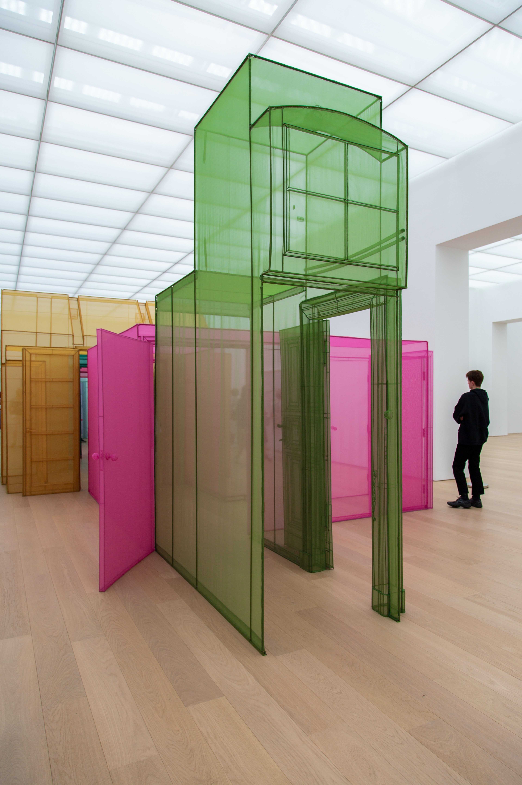

We are Team ChiChi. We experiment our ideas in a form of art. For the better future, for the better world. Please follow our sns accounts to catch up our new works and events. @teamchichi

While the terms ‘performance’ and
‘performance art’ only became widely used in the 1970s,
the history of performance in the visual arts is often traced back to
futurist productions and dada cabarets of the 1910s.
Throughout the twentieth century performance was often seen
as a non-traditional way of making art. Live-ness,
physical movement and impermanence offered artists
alternatives to the static permanence of painting and sculpture.
In the post-war period performance became aligned with conceptual art,
because of its often immaterial nature.